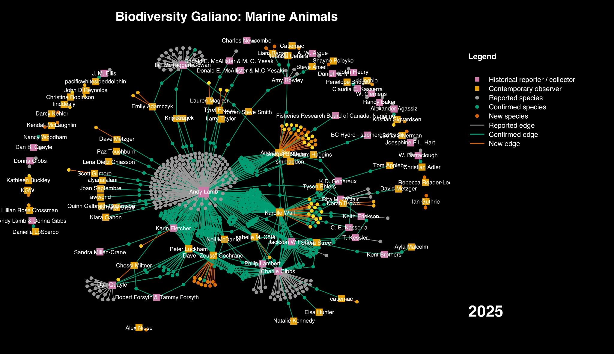
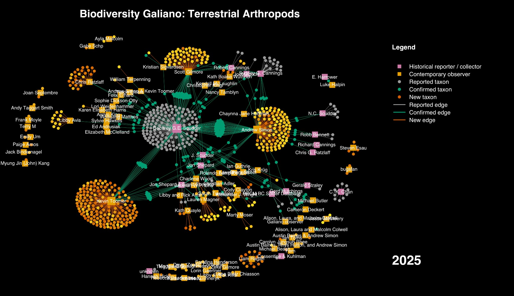
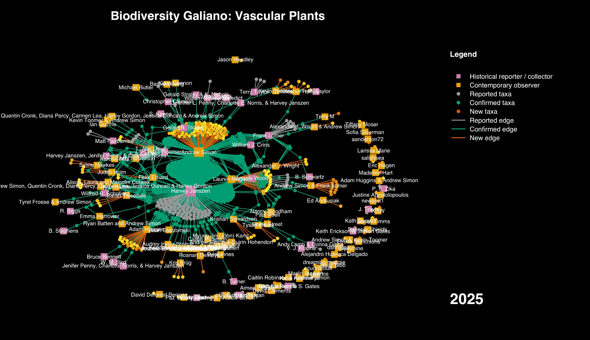

The structure of biodiversity knowledge: ten years of Biodiversity Galiano

Pink squares are historical reporters, orange squares are contemporary observers. Grey dots are historical records still unconfirmed; green dots are confirmed; orange dots are new to the island. Every line is a person connected to a species.
Ten years ago I started keeping species lists for Galiano Island, without much sense of what that would turn into. This year, giving a retrospective talk to Nature Vancouver, I built a set of network diagrams to explain it—one each for marine animals, terrestrial arthropods, and vascular plants—and they turned out to say something I hadn’t fully seen while I was inside the project: biodiversity knowledge isn’t really a list of species at all. It’s a graph. Squares are people, dots are species, and a line between them is a single act of someone looking closely enough to write something down.
I should say upfront what this graph doesn’t hold. Everything here comes from one particular tradition of documenting species—specimens, lists, structured records—and not from the much older, ongoing knowledge that Hul’qumi’num and SENĆOŦEN-speaking peoples hold about this place, which isn’t mine to draw into a diagram. Species reported here have mostly existed on this island long before anyone wrote their names down.
The oldest node in the marine diagram traces to a 1859 collection by Alexander Agassiz—the striped green sea anemone, an introduced species, fittingly enough. We only know about it because Rick Harbo tracked the reference down in a 1921 paper decades later, and, by coincidence, someone independently photographed the same species on Galiano and posted it to iNaturalist more than a century after Agassiz collected it. Two people, a century and a half apart, noticing the same small thing—that’s the whole graph in miniature.
Look at where the diagrams get dense and a pattern holds across all three: a handful of people account for a disproportionate share of the structure. Andy Lamb’s Pacific Marine Life Surveys, running since 1968, logged over 16,000 records and turn out to be behind 60% of all novel marine species reports for the island—a small, informal diving survey outperforming most formal alternatives. On land, the equivalent hub is Geoffrey Scudder, who kept a cabin on Galiano and collected insects there for decades, eventually handing over a hand-curated species list before he passed away. These aren’t just prolific contributors. On the diagram, they’re structurally load-bearing—remove them and most of what we know about the last fifty years collapses with them.

Scudder's decades of collecting form the historical core; recent contributors like Kevin Toomer and Chris Ratzlaff have built comparably dense clusters of their own.
Not every observation makes it into the graph right away, either. Jesse McCleery, the chef at Pilgrimme on Galiano, had been photographing moths for years—on his personal Instagram account, where none of it was doing any taxonomic work. It took a few years of asking before he moved those photos to iNaturalist, at which point several turned out to be new island records, including a moth found nowhere else in western North America but Galiano among the places we know to look. The knowledge existed the whole time; it just wasn’t structurally connected to anything yet. A closely related case: in 2012, naturalist Terry Taylor identified Galiano’s stinging nettles as the native Urtica gracilis, when most people—reasonably, going on the assumption that nettles are usually introduced—had it down as U. dioica. It took the wider botanical community about a decade to come around to his correction.

Harvey Janszen's decades of fieldwork form the densest historical cluster in the plant diagram—the same body of knowledge behind two extirpation calls in a [later paper](/research/detecting-extinction-at-two-scales/).
Ten years in, the numbers behind these graphs: 686 marine species known for the island, 604 of them from the historical baseline and 82 added new since 2015—with community members having personally confirmed exactly half of the historical total. Terrestrial arthropods stand at 1,520 species, 75.7% of them observed by a project contributor, leaving 369 taxa known only from old records and still at large. Vascular plants are the most thoroughly worked-through group: over 800 species, 87% documented, roughly a hundred—about 64 of them native—still unaccounted for.
The graph is still growing, and not just with more dots for me to find. This past September, Spencer Peters—a UBC grad now working in amphibian conservation—spent five days on Galiano searching for Pacific gopher snakes, a species with exactly two confirmed historical records in the whole of British Columbia: one from 1866, one from Galiano in 1957. A single ambiguous iNaturalist photo from 2019 was the entire reason to look again. He didn’t find a snake. He did confirm the habitat looks suitable, and came away with the same conclusion this whole project keeps arriving at from different directions: absence of evidence is not evidence of absence. What matters is that someone new joined the graph to go check.